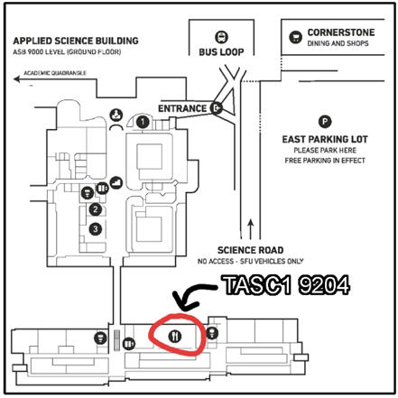

MOUNTAIN MADNESS 2022
ABOUT
FAQ
WHAT IS MOUNTAIN MADNESS?
Mountain Madness is the annual hackathon organized by the SFU Computing Science Student Society. Our hackathons are cozy, tight-knit events welcoming students of all skill levels and experience. The "Mountain" in the name pays homage to Burnaby Mountain, the original foundation of Simon Fraser University, and the scenic location for a full weekend's worth of fun. The "Madness" part refers to the crazy and unique prizes we give to the maddest [computer] scientists at the event!
WHY MOUNTAIN MADNESS?
We focus less on a project's commercial applications, and more on learning and creativity.
This is an opportunity to spend a weekend playing around with your favourite technologies to
produce something fun and interesting.
This makes Mountain Madness the perfect event for everyone from fresh-faced hackers looking to learn to
seasoned CS veterans trying to tinker.
WAIT, WHAT ACTUALLY IS A HACKATHON?
A hackathon is an event where teams of people come together to work on a shared project inspired by an event-provided theme. Mountain Madness will have 24-hours of development time allotted, during which teams will start from scratch and try to make the coolest thing they can before the time is up.
CAN I WORK ON MY PREVIOUS PROJECTS?
No, the goal of the event is to see what awesome things you can make in a 24 hour period of time. So to start from an existing project is against the spirit of the event. Existing open-source libraries and frameworks are fine, of course. Ask an organizer if you are unsure if you can use some code.
WHEN DOES MOUNTAIN MADNESS START?
This is subject to change, but, the Hackathon starts off with check in and registration at 4:30 PM on April 29th, and the opening ceremony commences at 5:00 PM. Assisted Team Creation, and hacking starts at 5:30 PM.
WHEN WILL FOOD BE SERVED?
Dinner will be provided at 9:00 PM on 29th April.
Breakfast will be provided at 8:00 AM on 30th April.
Lunch will be provided at 12:00 PM on 30th April.
WHEN DOES THE HACKATHON END?
Hacking ends at 5:00 PM on 30th April, and Judging will begin at the same time.
WHERE IS MOUNTAIN MADNESS?
The event is being hosted at the SFU Burnaby campus. We have a number of rooms being used for the event, but our primary room, and where you should go for check-in, is TASC 9204. We're going to put up signs with directions everywhere to make it hard for you to get lost.
WHERE IS TASC 9204?

WHEN SHOULD I REGISTER?
Registration is open now!. Click the Apply button on the navbar or Click Here!
WHAT SIZE SHOULD MY TEAM BE?
Teams should have no more than 5 members; beyond that, organizing yourselves becomes a nightmare. You can work alone if you really want to, but you'll have a worse experience.
WHAT IF I DON'T HAVE A TEAM?
Don't worry if you don't have a team before the event, we help all the single people form teams. We will also allow non-SFU students to participate in Mountain Madness as long as at least 50% of the team is made up of SFU students.
HOW MUCH DOES IT COST?
This event is absolutely free!